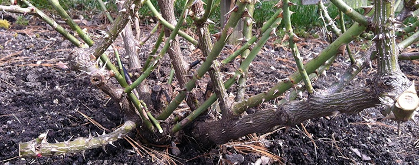
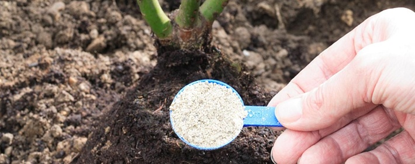
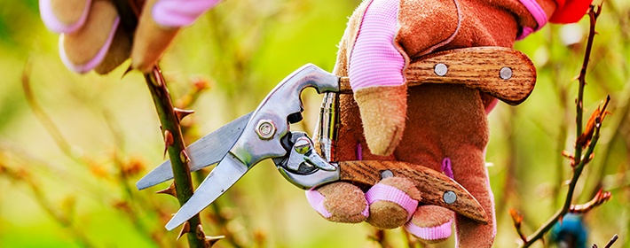
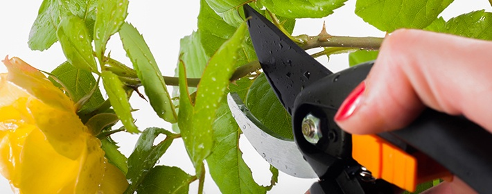

Раздел "ЦВЕТОВОДСТВО" на нашем сайте педставлен совветами по уходу за розами
Как ухаживать за розами: проверенные советы опытных садоводов
Многие люди боятся сажать розы, считая климат своего региона сложным для их выращивания.
Лето короткое, осень сырая, зима - длинная и непредсказуемая. Не укроешь розарий - вымерзнет,
перестараешься с укрытием - выпреет. Нередко так и происходит, особенно когда сорт выбран по
изображению на картинке, а не по характеристикам и рекомендациям по его районированию.
Уход за розами: что делать после зимних холодов
Запреть для роз — хуже, чем замерзнуть, поэтому снимите с них укрытие, как только пригреет солнце.
- Уберите все, чем пригибали ветки и расправьте их. Подкопайте вокруг куста вилами и поставьте опору.
- Прежде, чем обрезать розы весной, осмотрите основание куста: там могут быть плесень и потрескавшиеся побеги.
Белая плесень не вредит: через пару недель она пропадет. Опаснее серый пушистый налет — такой, как у подгнивших
ягод клубники. Зараженный куст погибнет, если не ухаживать за розой. На сырых участках часто побеги цветка
покрыты морозобоинами — продольными разрывами коры. Если их немного, оставьте стебли. Обрежьте ветки с побуревшими трещинами.

- Внимание на побеги: черные — значит мертвые, зеленые — живые.
Или ориентируйтесь по срезу: если сердцевина коричневая, она омертвевшая. Режьте до тех пор, пока не будет белой.
- Обрезайте больные стебли до живой ткани на расстоянии 1 см от образовавшейся почки. Убирайте тонкие побеги и растущие
«во внутрь» куста, чтобы не сгущался. Будет правильным обрезать розы и формировать куст в конце апреля или в начале мая,
когда распускаются листочки.
- После обрезки роз, обработайте их трех процентным раствором медного купороса или однопроцентной суспензией коллоидной серы.
Затем подкормите минеральными удобрениями — по горсти на куст. Или натуральными: одним-двумя стаканами древесной золы вокруг растения.
Особенно хорошо это делать после дождя, удобрения быстрее впитываются в землю.

Розам полезна подкормка из кожуры банана. В ней содержится селен, полезный для цветов.
Порежьте кожицу на мелкие кусочки, удобрите и припушите землей.
Как обрезать розы, которые плохо перезимовали?
Поврежденные побеги срезайте покороче, даже если придется укоротить до основания куста.
Толстые стебли удаляйте сучкорезом, потоньше — обычным секатором. Чтобы отрезать ветки в один-два приема,
покупайте инструменты с силовым приводом. Он соединяет ручки и лезвия и автономно выбирает опцию, соответствующую толщине ветки.

- Освободите пенек-прививку от земли, чтобы быстрее пробуждались спящие почки.
- Очистите пень от отслаивающейся коры, делая своеобразный пилинг.
- Чтобы стимулировать рост почек, создайте растению условия повышенной влажности.
Накройте розу обрезанной пластиковой бутылкой. Спустя пару недель понаблюдайте проснулись ли почки.
Даже если через три недели роза выглядит «мертвой», не спешите выкапывать.
Подождите до осени — есть шанс, что она пустит молодые побеги от корней.
Как формировать куст розы
Формирующую обрезку роз разделяют на три вида: сильную, среднюю и слабую.
- При сильной обрезке на побеге оставляют 1-2 почки. Обычно применяют для полиантовых и миниатюрных роз.
- При средней — 3-6 почек для чайно-гибридных, флорибунда и грандифлора.
- При слабой обрезают только верхушки побегов у парковых и плетистых роз.
В холодных районах куст розы формируют в виде чаши для лучшего освещения и обогрева растения.
Срезы сразу же обработайте противогрибковым препаратом — в крайнем случае, защитите слоем олифы или садовым варом.
Как обрезать чайную розу
- Весной сформируйте куст высотой 30 см.
- Обрежьте побеги до середины длины стебля и на полсантиметра выше наружной почки.
- Летом обрезайте отцветшие бутоны и укорачивайте длинные побеги.
- Осенью срежьте только сухие, поломанные и молодые побеги.
Как ухаживать за розами осенью
Оптимальный уход за розами осенью — перед укрытием куста на зиму. Оставьте сильные стебли высотой до 40 см, удалите молодые побеги и бутоны.
Лучшее время для укрытия — первая половина ноября. Не утепляют только сорта, привитые на шиповнике.
- Плетистые розы снимите с опор, уложите на землю и прикройте сухими листьями, а сверху ветками.
Вместо них можно использовать опилки, хвою, перегной, торф или песок. Главное — чтобы укрытие дышало,
поэтому не укрывайте розы полиэтиленовой пленкой.
- Крону штамбовых роз обвязывают мешковиной.
Как ухаживать за комнатной розой
Роза капризна: принесешь ее домой, пышущую здоровьем, а она быстро чахнет. Нужно правильно ухаживать за розой в горшке,
и тогда она долго радует своим цветением.
Если красавица недавно появилась в доме, дайте ей время акклиматизироваться.
- Поставьте цветок на две недели отдельно от других растений. Поливайте в меру:
чтобы не засыхала почва и не образовывалось болотце, роза этого не любит.
- Каждый день опрыскивайте. В первые дни можно это делать раствором эпина из расчета
2 капли на стакан воды. Тогда цветок легче перенесет стресс.
Лучшее место для розы — западные и восточные окна. Хорошее освещение, регулярные полив и подкормка
сделают доброе дело — она будет долго цвести буйным цветом.
- Не допускайте перегрева растения. Ставьте вазон в белое кашпо или оберните горшочек фольгой. Летом держите вазон на балконе и берегите от сквозняков.
- Подкармливайте весной и летом раз в две недели. При подкормке чередуйте органические и минеральные удобрения.
- С осени готовьте цветок к зиме — меньше поливайте и удобряйте. Зимой вообще не удобряйте и обрежьте веточки.
- Розу обрезают над пятой почкой, отсчитывая от основания. Важно, чтобы лист «смотрел» наружу куста, а не во внутрь,
поэтому обрезайте, ориентируясь на наружную почку. Если обрезать над листиком, который идет «во внутрь», куст будет густым.

Обрезать нужно не только ветки, но и привявшие бутоны. Не ждите, пока они засохнут, иначе цветок потратит энергию на формирование семян.